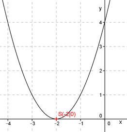

Aufgabe 30 Bestimmen Sie die Koordinaten des Scheitelpunktes S und der Nullstellen N der folgenden Funktion.? y = (x + 2)2 Die Funktion liegt in der Scheitelpunktform vor. y = (x + 2)2 S(-2|0) Nullstellen : 0 = (x + 2)2 Der Ausdruck in der Klammer wird nur dann gleich 0, wenn für x die Zahl -2 eingesetzt wird. N1 = N2 = (-2|0) Doppelte Nullstelle = Berührpunkt 